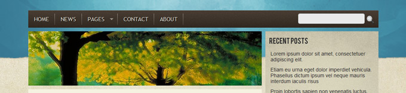
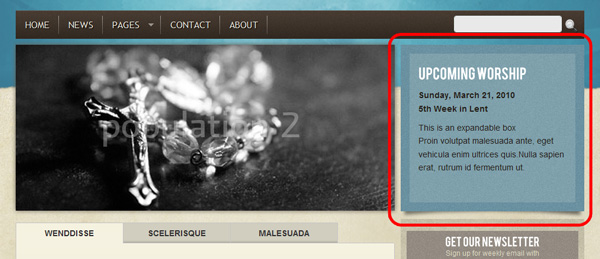
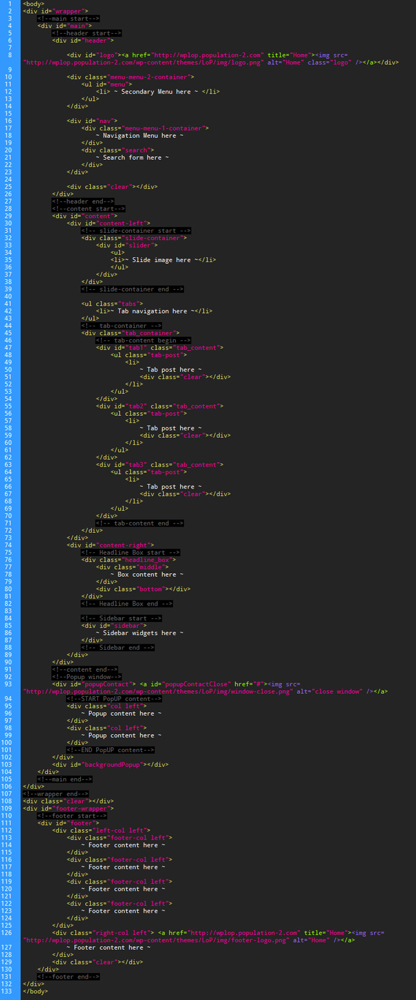
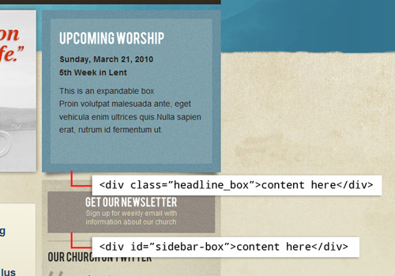

Created: 08/15/2010
By: population2
Email: populationtwo@gmail.com
Thank you for purchasing my theme. If you have any questions that are
beyond the scope of this help file, please post your questions here. For other questions and feedback feel free to send me a message from my profile page.
Thank you!
This theme was built and designed to work with version 3.0. Please upgrade your Wordpress to version 3.0. if you have not already. The theme has not been tested with previous versions of WordPress.
The theme is widget ready and you can add and configure your own widgets in the side bar however you like. There are several color schemes installed with the theme. You can activate any of these from the theme options menu.
Installing the theme can be done two ways. You can upload the zipped theme file, using the built in WordPress theme upload, or copy the files through FTP.
Once the theme is installed you are ready to start configuring it for your content. See the section on configuring the theme options below.
You need to perform these steps, otherwise the theme will not display properly
You need to change the default homepage to the theme home page template.
Each page template will show a header image randomly. All the header images
is in the img > headers folder. You can specify a certain image for a certain
page. If you not specify an image, it will show a random image.

You need to edit the page id in header-images.php to do this.
Example:
Once the theme is installed you will see a new menu on the bottom left side of your WordPress admin. The theme menu contains the following areas:
This area contains settings for choosing the color scheme and changing your logo.
The home page section is where you will select the content source for the 3 tabs on the home page. It also contains options for configuring your slide show.
You should select the category you will be using for your tabs in this area so you don't forget. If you don't have a category you want to use, create one and select it now.
This is where you fill the content for the Headline Box

This is where you fill the content for the right column footer. You also can change your footer logo and add tracking code.
This is a little bit complicated. You need to edit popup.js. Follow these steps and you should be good.
Install the plugins in the plugins folder. This theme was designed to work with these plugins:
No hassle contact form plugin with advanced Spam protection that doesn't require Captcha.You just need to create a page or post with the shortcode: [clean-contact]. Visit plugin site
A simple but powerful widget to display updates from a Twitter feed. Configurable, reliable and with advanced caching.Visit plugin site
Adds links to all of your social media and sharing site profiles. Icons come in 3 sizes, 4 icon styles, and 4 animations. Visit plugin site
This theme is a fixed layout with two columns. All of the information within the main content area is nested within a div with an id of content-left. The sidebar's content is within a div with an id of content-right. Here is the general structure of the typical page:
CSS files in this theme:
This contains the specific styling for the page. The file is separated into sections using:
This contains the styling for the navigation bar (#nav).
Here are a few css styling guide:
This theme imports these Javascript files.
A fast, lightweight, extensible JavaScript Library that simplifies how you traverse HTML documents, handle events, perform animations, and add Ajax interactions to your web pages.
This script is used to replace the fonts with non-standard fonts. The font
I used for this theme is Bebas. It’s free and can be downloaded at http://www.fontsquirrel.com/fonts/Bebas
You can replace any text with cufon by adding "replace" class. More
information about cufon
Creates enhanced Suckerfish-style dropdown menus from existing pure CSS dropdown menus. Full documentation at http://plugins.jquery.com/project/Superfish
This plugin will fix the missing PNG-Transparency in Windows Internet Explorer 5.5 & 6. Full documentation at http://jquery.andreaseberhard.de/pngFix/index.html
This script is for popup window to show direction and service times information. Credits to Adrian " yEnS" Mato Gondelle www.yensdesign.com
This is a script to create a slideshow on the homepage. You can read further
documentation here
This script is only embedded in the home.html.
I've used the following images, javascript, font, icons or other files as listed.
I've included ten PSDs with this theme: